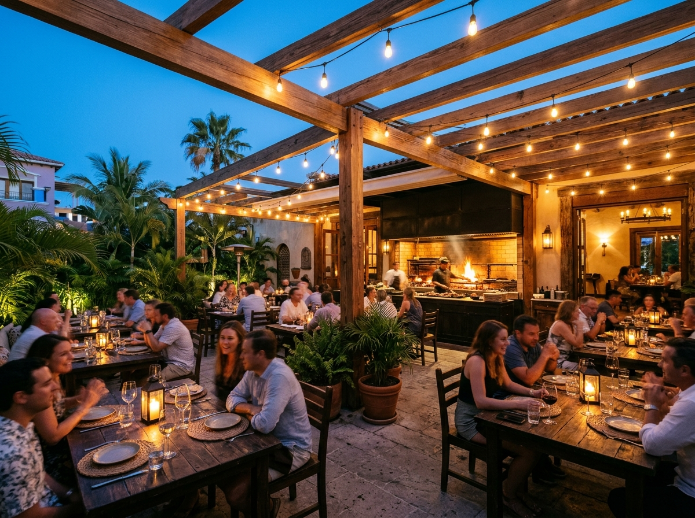
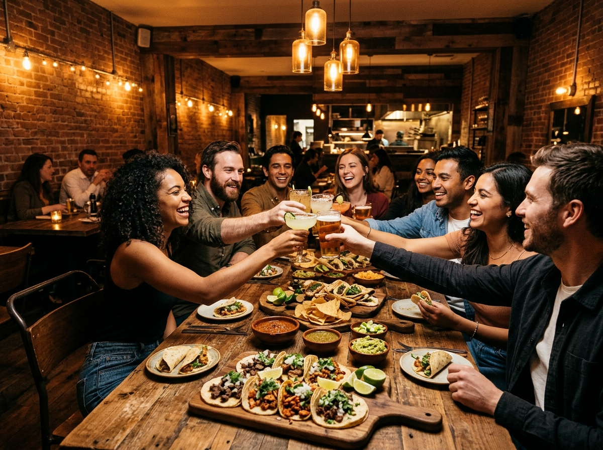

Grill House · Colima
Con Branko
El arte del fuego. Tacos de asador & tortillas hechas a mano.
Nuestra Filosofía
Tacos de asador, tortillas hechas a mano
En Con Branko todo pasa por la brasa: carne de la mejor calidad, tortilla hecha a mano y esa sazón que nos hizo famosos. Del clásico taco de sirloin al legendario Taco Branko bañado en tuétano. Dos sucursales en Colima, una sola obsesión por el sabor.
- Sirviendo desde el año 2020
- Más de 50 platillos en carta
- 2 sucursales en Colima
- Calificación promedio de 4.9 sobre 5 estrellas en Google
Caso de Uso 2 · En Línea
Reservación de Mesa y Pedidos
Aparta tu mesa en cualquiera de nuestras dos sucursales en Colima. Te confirmamos por teléfono o WhatsApp al instante.
Dónde encontrarnos
Nuestras sucursales

Sucursal Sur
Terraza San Fernando
Terraza San Fernando
Colima, México
Martes a Sábado · 6:00 PM – 11:30 PM

Sucursal Norte
V. Carranza
V. Carranza #2299, Colima Norte
Colima, México
Martes a Sábado · 6:00 PM – 11:30 PM
Lo que dicen
Nuestros comensales
"El Taco Branko es una locura — la carne bañada en tuétano es otro nivel. Las tortillas hechas a mano hacen toda la diferencia. El mejor taco de Colima."
"Ambiente increíble y la atención de diez. Los tacos del asador llegan calientitos y bien servidos. El de arrachera marinada es mi favorito, ya volvimos tres veces."
"Pedimos a domicilio desde la sucursal de Carranza y todo llegó perfecto. El Mega Burro alcanza para compartir y las doraditas están increíbles. Recomendadísimo."